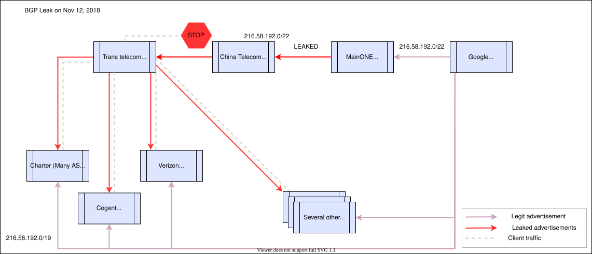
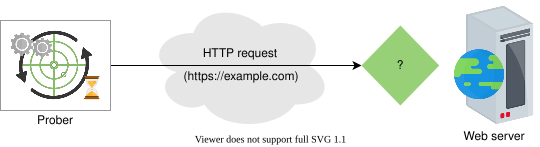
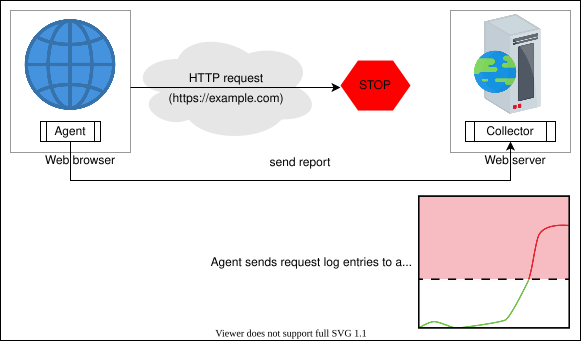
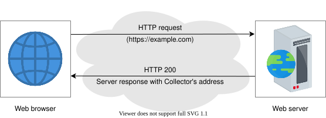

15. Monitor Client-side Errors
Focus on Client-side Errors in a Monitoring System
Focus on Client-side Errors in a Monitoring System
Learn what client-side errors are and their impact on the service.
We'll cover the following
Client-side errors#
In a distributed system, clients often access the service via an HTTP request. We can monitor our web and application servers’ logs if a request fails to process. If multiple requests fail, we can observe a spike in internal errors (error 500).
Those errors whose root cause is on the client side are hard to respond to because the service has little to no insight into the client’s system. We might try to look for a dip in the load compared to averages, but such a graph is usually hard. It can have false positives and false negatives due to factors such as unexpectedly variable load or if a small portion of the client population is affected.
There are many factors that can cause failures that can result in clients being unable to reach the server. These include the following:
- Failure in DNS name resolution.
- Any failure in routing along the path from the client to the service provider.
- Any failures with third-party infrastructure, such as middleboxes and content delivery networks (CDNs).

Failures due to a routing bug#
Let’s look at a real-world example of an error that impacted a large number of service customers, but the service wasn’t readily aware of it.
One of Google’s peer ISPs accidentally announced Internet routes that it wasn’t supposed to. As a result, the traffic of many of Google’s customers started routing through unintended ISPs and wasn’t reaching Google. Clients were frustrated because they weren’t able to reach Google, while Google might have been unaware of such problems right away because these issues didn’t happen on its infrastructure.
We can learn more about this event by clicking here.

The above leak isn’t unique. Similar issues keep arising. Another such leakage happened on April 16, 2021, when an AS mistakenly announced over 30,000 BGP prefixes. This resulted in a 13 times spike in the inbound traffic to their network. However, an increase in influx was observed, and the problem was solved.
The impacted services’ monitoring systems might not catch the above events readily. Monitoring such situations is crucial so that the application remains available for all of its customers. Therefore, in the next lessons, we’ll go through methods that help us to monitor the situations mentioned above.
Design of a Client-side Monitoring System
Design of a Client-side Monitoring System
Learn to design a system to monitor the errors that don’t reach our service.
A service has no visibility of the errors that don’t occur at its infrastructure. Still, such failures are equally frustrating for the customers, and they might have to ask their friends, “Is the service X down for you as well?” or head to sites like Downdetector to see if anyone else is reporting the same issues. They might report the problem via a Tweet or some other communication channel. However, all such cases have a slow feedback loop. As a service provider, we want to detect such problems as quickly as possible to take remedial measures. Let’s design such a system.
Initial design#
To ensure that the client’s requests reach the server, we’ll act as clients and perform reachability and health checks. We’ll need various vantage points across the globe. We can run a service, let’s call it prober, that periodically sends requests to the service to check availability. This way, we can monitor reachability to our service from many different places.

Issues with probers#
We can have the following issues with probers:
-
Incomplete coverage: We might not have good coverage across all autonomous systems. There are 100,000 unique autonomous systems on the Internet as of March 2021. It’s not cost-effective or even possible to put those many probes across the globe. Country or ISP-specific regulations and the need for periodic maintenance are additional hurdles to implementing such a scheme.
-
Lack of user imitation: Such probes might not represent a typical user behavior to explain how a typical user will use the service.
Note: The initial design is based on active probing.
Improve the design#
Instead of using a prober on vantage points, we can embed the probers into the actual application instead. We’ll have the following two components:
-
Agent: This is a prober embedded in the client application that sends the appropriate service reports about any failures.
-
Collector: This is a report collector independent of the primary service. It’s made independent to avoid the situations where client agents want to report an error to the failed service. We summarize errors reports from collectors and look for spikes in the errors graph to see client-side issues.
The following illustration shows how an agent reaches an independent collector when primary service isn’t reachable:

These collectors are a hierarchy of big data processing systems. We can place them near the client network, and over time, we can accumulate these statistics from all such localized sites. We’ll use online stream processing systems to make such a system near real-time. If we’re mainly looking for summary statistics, our system can tolerate the loss of some error reports. Some reports will be relative to the overall user population. We might say 1% of service users are “some.” If we don’t want to lose any reports, we’ll need to design a system with more care, which will be more expensive.
Now, we’ll solve the following concerns:
- Can a user activate and deactivate client-side reports?
- How do client-side agents reach collectors under faulty conditions?
- How will we protect user privacy?
Activate and deactivate reports#
We’ll use a custom HTML header to send appropriate information to the collectors. Though a client accesses the service via a browser, a specific browser should know about this feature to appropriately fill in the header information in the HTTP requests. For organizations that make browsers and provide services (for example, Chromium-based browsers), such features can be incorporated and standardized over time.
Another solution can be to use a client-side application that the service controls, and then we can easily include such headers over HTTP.
The client can fill in the request header if the client has already consented to that. The service can then reply with appropriate values for the policy and collection endpoints.

Reach collectors under faulty conditions#
The collectors need to be in a different failure domain from the web service endpoint that we’re trying to monitor. The client side can try various collectors in different failure domains until one works. We can see a similar pattern in the following examples. At times, we refer to such a phenomenon as being outside the blast radius of a fault.
If we want to see the reachability of an IP, we host the service on a different IP. If we monitor the availability of a domain, we host the collector on a different domain. And if we want to detect that an autonomous system route isn’t hijacked, we host the service in a different autonomous system. Though, for last-mile errors, there isn’t much we could do as a service provider. We might accumulate such events at the client side and report them on the next connectivity. A service can influence the remaining component failures.
1.2.3.4 unreachable | Different server IP |
Can't resolve example.com | Different domain |
AS 1234 hijacked | Different ASN |
CDN available | Different/no CDN |
Last-mile problems | No readily available fall-back for the service |
Protect user privacy#
The human user who uses the client-side software should be in full control to precisely know what data is collected and sent with each request. The user should also be able to reactivate the feature any time they wish. If we use our client-side application (and not a browser application), we have a lot of flexibility in what diagnostic could be included in the report. For a browser-based client, we can avoid the following information:
- We can avoid including traceroute hops to see a client to the service path. Users can be susceptible to their geographic location. It might be akin to collecting location information.
- We can avoid including which DNS resolver is being used. Again, details of DNS can leak some information about the location.
- We can avoid including round-trip-time (RTT) and packet loss information.
Note: As a guiding rule, we should try to collect as little information as possible, and it must only be used for the specific purpose a user gave consent for.
Ideally, for a web-based client, we should only collect the information that’s logged in the weblog when any request has been successful.
We shouldn’t use any active probing except to test the service’s standard functionality and report such probes’ results. So, traceroute and RTT or packet loss information is excluded.
Any intermediary (like ISPs or middleboxes) can’t change, add, or remove the error reporting mechanism due to encryption. Similarly, designated collectors are the only place where such data can go.
Conclusion#
-
In a distributed system, it’s difficult to detect and respond to errors on the client side. So, it’s necessary to monitor such events to provide a good user experience.
-
We can handle errors using an independent agent that sends service reports about any failures to a collector. Such collectors should be independent of the primary service in terms of infrastructure and deployment.